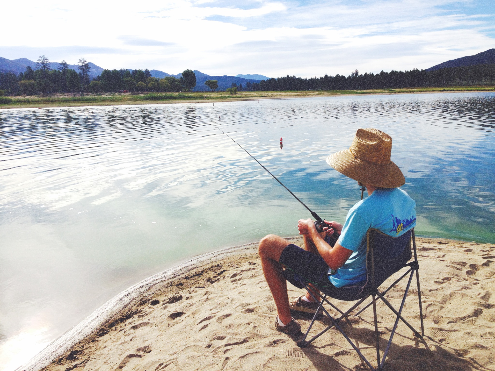
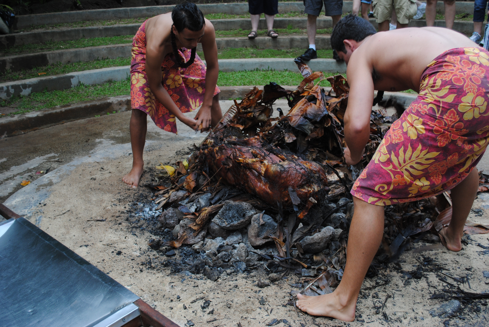

Photography








Hi, my name is Joanne! I'm currently studying journalism at Northwestern University as a sophomore.
I believe words are immensely powerful. As a journalist, I embrace the ability to weave individual letters - meaningless when standing alone - into sentences that provide a platform for those with no voice to be heard.
I thrive under deadlines and welcome new challenges.
I enjoy learning new skills that will enhance my potential as a storyteller. This is what prompted me to take a course in coding and build this website you are viewing today.
Feel free to scroll down and view my past projects. Thanks for stopping by!
Tomate Fresh Kitchen is a small, neighboring restaurant to our college that one of my "foodie" friends had always raved about. So as a videographer for Northwestern's Spoon Magazine, I had to go check it out for myself. This video was published on Spoon's website.
During my internship at KoreAm Journal, I was able to shoot and produce this profile story that showcased a University of California, Irvine, graduate who was chosed to represent the US in the World University Archery Championships. This story was published online in conjunction with another reporter's written story.
This original enterprise story was produced for my multimedia journalism class as one component of my final project, which also included a print story, an audio slideshow and an interactive element. My final package delved into the mysterious world of theatre, but this video specifically zoned in on an aspiring costume designer and her struggle to break into the industry.
UNITY, a student-run organization at Northwestern University that puts on an annual fashion show to raise money for charity, held a competition to chose eight student make-up enthusiasts to be the make-up artists for their fashion show. This was one of the first stories I pitched, shot and produced for one of my multimedia journalism classes.
After South Korea's close chance at taking the FIFA World Cup home in ____, devoted South Koreans soccer fans have widely emerged. I produced a video that captured the upbeat spirit of the game and its fans. It was published on KoreAm's website.
I'm a Korean-American born and raised on the sunny shores of California, but have recently donned my faithful North Face jacket and moved out to Evanston, Illinois, for college. I chose to go to college almost across the nation not only for an education at Medill, but also to break out of my small town bubble. And I have to say -- it has been one of the best decisions I've ever made.
In the few years I've been in the Midwest, I've had the opportunity to face a muriad of amazing experiences. From celebrating my first white Christmas to meeting amazing individuals who come from various cultural backgrounds very different from my own, my heart has become torn between the beautiful cities of Chicago and Los Angeles.
Despite the assumption that old-school print will eventually die out, I firmly believe the organic experience of flipping through the newspaper in the morning is one that can never be replaced and, therefore, I am an adamant believer that print will live on. While I do like to dabble a little in video production and photography, my passion is -- and always will be -- writing.
Journalism was the perfect field for me because it combined my passion of writing and my interest in interacting with people. There is no better feeling than a successful interview in which an individual chooses to open up to me and allow me to see the world through their eyes. Although I appreciate these moments I'm able to make a connection in my interviews, I strongly believe in maintaining unbiased reporting and unceasingly seeking out the truth.
In my free time, I like making Pinterest crafts, binge-watching TV shows on Netflix (I'm currently watching Parks and Recreation!), stuffing my face with salty foods, hand writing letters to close friends and family and taking pictures of my adorable cat.
If you'd like to know more about me or have any questions, please email me at joannelee2017@u.northwestern.edu!
Feel free to view my resume here.